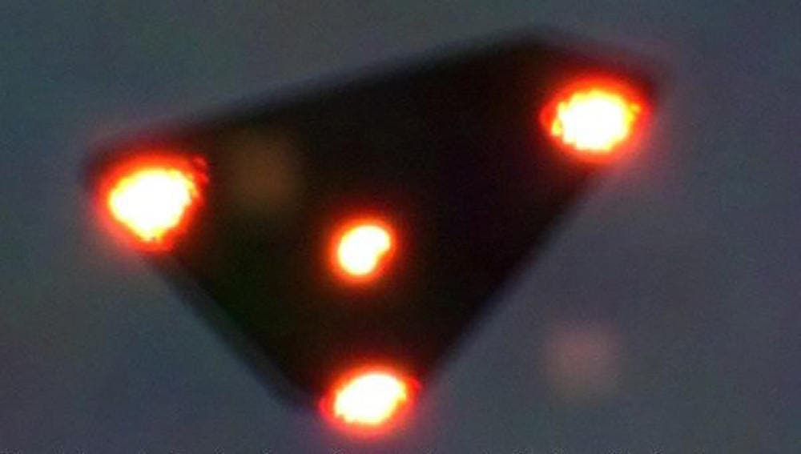

1989-1990.

The Belgian UFO wave was a series of reported sightings of triangular unidentified flying objects in Belgium that spanned from November 29 1989 to April 1990. It began near Eupen when two gendarmerie (police) officers on patrol reported seeing a flat, triangular craft with bright lights flying at low altitude. Over the course of that evening, roughly 143 reports were logged across the region, though many were submitted after initial media reports aired. Skeptics note that several early descriptions matched conventional aircraft, including low-flying Bell UH-1 Huey helicopters.
The wave reached its peak on the night of 30–31 March 1990. Around 23:00, a radar control center at Glons received reports of unusual lights southeast of Brussels. Ground radar at Semmerzake tracked multiple returns, leading the Belgian Air Force to scramble two F-16 fighters from Beauvechain Air Base. Over the next hour, the F-16s attempted nine intercepts and registered temporary radar locks on three occasions, though neither pilot made visual contact. Subsequent investigations by the military and civilian physicists concluded that the radar locks were false returns caused by atmospheric interference—specifically temperature inversions and Bragg scattering—and ground reflections. Ground witnesses, including a gendarmerie captain, reported seeing lights making sudden, jerky movements before fading around 01:30. Although Belgian military officials initially inquired whether experimental stealth aircraft were operating in the area, U.S. authorities confirmed no such aircraft were deployed.
The most famous visual evidence was the "Petit-Rechain photo," released anonymously in April 1990, showing a dark triangle with a light at each corner. Experts from NASA, the French National Centre for Space Studies (CNES), and the Belgian Royal Military Academy examined the photo without reaching a definitive conclusion, and the Belgian ufological group SOBEPS maintained for two decades that it was genuine. In 2011, however, the photographer, Patrick Maréchal, admitted on Belgian television that the photo was a hoax created using a painted styrofoam triangle and flashlights hung from a string to prank colleagues
Skeptics view the wave primarily as a psychosocial phenomenon. Sociologists and researchers argue that heavy media coverage created a feedback loop, prompting the public to misinterpret everyday lights, planets, and aircraft as triangular craft. SOBEPS eventually collected over 2,600 reports, though critics note that the flood of accounts only occurred after repeated public appeals. While a minority of researchers argued that some sightings remained unexplained, mainstream consensus attributes the wave to a combination of misperceived conventional aircraft, atmospheric radar anomalies, media-driven excitement, and outright hoaxes.